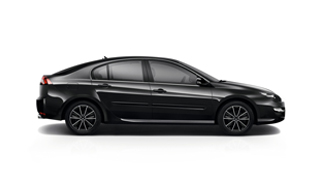

5.933 km 10.02.2009
Silecek sistemi
- Cam silecek süpürgesi — 4 adet
- Ön cam silecek fırçası sök-tak
Renault Laguna III · 2009 · 1.6 Benzin + LPG
İlanın meraklısı için hazırlanmış ek sayfa: aracın yetkili Renault servisinde tutulan bakım kayıtları, kilometre geçmişi ve benim dönemimde yaptırdığım işlemler. Kayıtlar olduğu gibi, hiçbiri çıkarılmadan verilmiştir.

Model görseli · temsilidir
Bu sayfadaki yetkili servis kayıtları benden önceki döneme aittir. Aracı 25 Temmuz 2022'de 232.398 km'de satın aldım; kayıtlar 2009–2018 arasını, yani ilk sahibinin Renault yetkili servisinde yaptırdığı işlemleri kapsıyor. Benim dönemimde yaptırdıklarımı ayrı başlık altında bulacaksınız.
Aşağıdaki dokuz kayıt Renault yetkili servis sisteminde görünen işlemlerdir ve fatura numaralarıyla birlikte verilmiştir. Tarih sırasına göre dizilmiştir — bir tarihe tıklayın, o tarihte yapılan işlemlerin dökümü açılsın. Kehribar şeritli ve noktalı kayıtlar ağır bakım kalemleridir.
Sigorta sisteminde yıllar içinde kayda geçen kilometre değerleri. Değerler düzenli olarak artmaktadır; hiçbir noktada geri dönüş yoktur.
Araç 2022'den bu yana bende. Bu dönemde bakımlarını özel serviste yaptırdım. Aşağıdaki işlemler son aylarda yapılmış olup, büyük bölümü 14 Eylül 2026 tarihinde yapılmıştır.
On yıllık yasal ömrünü doldurduğu için değiştirildi. Yeni tank simit (toroidal) tiptedir ve stepne yuvasına monte edilmiştir — bagaj tamamen boştur.
Continental 225/45 R17 yazlık, dördü de sıfır olarak takıldı.
Her iki taraf da yenisiyle değiştirildi.
270.000 km'de değiştirildi. Aracın üçüncü kayış değişimidir.
Arka fren balataları yenilendi.
Araç muayeneden geçti, vizesi yenidir.
Apple CarPlay ve Android Auto destekli ekran sonradan takılmıştır.
LPG tankı stepne yuvasına girdiği için yedek lastik kapalı ortamda saklanmaktadır, araçla birlikte teslim edilir.